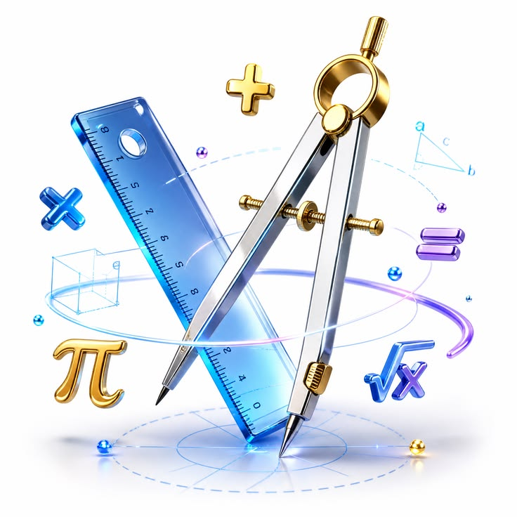

Selamat Datang di Portal Pembelajaran Matematika
Media interaktif pembelajaran bab Lingkaran untuk siswa Kelas VIII Sekolah Menengah Pertama (SMP).

Tujuan Pembelajaran
- Memahami unsur-unsur dan bagian penting pada lingkaran.
- Menghitung keliling dan luas lingkaran secara akurat.
- Menganalisis hubungan sudut pusat, panjang busur, dan luas juring.
- Menyelesaikan permasalahan kontekstual terkait garis singgung lingkaran.